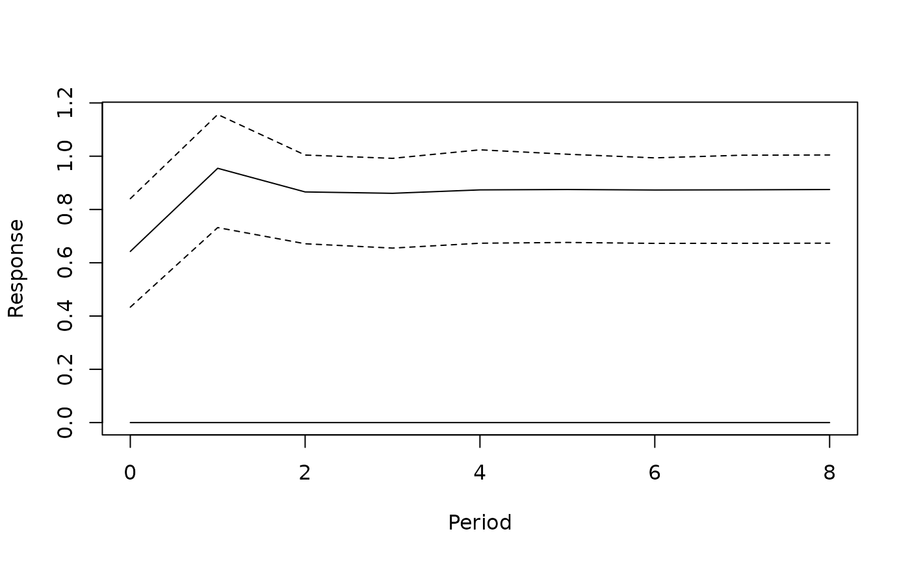

Dynamic Multipliers of a VAR Model with Exogenous Variables
Source:R/multipliers.bvarmodel.R
multipliers.bvarmodel.RdComputes the response of an endogenous variable to a change in a weakly exogenous variable of an object of class 'bvarmodel'.
Usage
# S3 method for class 'bvarmodel'
multipliers(
x,
impulse = NULL,
response = NULL,
n_ahead = 5,
ci = 0.95,
shock = 1,
type = "permanent",
cumulative = FALSE,
keep_draws = FALSE,
period = NULL,
...
)Arguments
- x
an object of class 'bvarmodel' with at least one exogenous variable.
- impulse
name of the exogenous variable that is moved.
- response
name of the endogenous variable whose response is returned.
- n_ahead
number of steps ahead. Zero is allowed and returns the impact response alone.
- ci
a numeric between 0 and 1 specifying the probability mass covered by the credible intervals. Defaults to 0.95.
- shock
size of the change in the exogenous variable, in its own units. Defaults to one.
- type
"permanent"(default) for a change that is held from period zero on, or"transitory"for a change in period zero alone. See 'Details'.- cumulative
logical specifying whether the responses should be cumulated.
- keep_draws
logical specifying whether the function should return all draws of the posterior multipliers. Defaults to
FALSE, so that the median and the credible intervals of the posterior draws are returned.- period
integer. Index of the period the coefficients are taken from. Only used for models with time varying parameters. Defaults to
NULL, so that the draws of the last period are used.- ...
further arguments passed to or from other methods.
Value
A time-series object of class 'bvarirf', which is what
irf returns, so that the same plot method applies.
Details
For the model
$$y_t = \sum_{l = 1}^{p} A_{l} y_{t-l} + \sum_{j = 0}^{s} B_{j} x_{t-j} +
C d_t + u_t,$$
where \(x_t\) is weakly exogenous, the dynamic multipliers \(M_h\) are
obtained from the recursion
$$M_h = \sum_{l = 1}^{\min(h, p)} A_{l} M_{h-l} + \sum_{j = 0}^{\min(h, s)} B_{j} e,$$
with \(M_h = 0\) for \(h < 0\) and \(e\) the unit vector that selects
the exogenous variable in impulse. The sum over \(B_j\) is what
makes the change permanent: the variable is one unit higher from period zero
on, so every lag of it that has come into range contributes. With
type = "transitory" the variable is one unit higher in period zero
alone, the sum collapses to \(B_h\), and the response returns to zero
unless the endogenous block has a unit root.
The deterministic terms and the errors play no part: a multiplier is a difference between two paths of the same model that differ only in the exogenous variable, so everything both paths share cancels. The responses are in the units of the endogenous variables per unit of the exogenous one, and they are computed draw by draw, so what is returned is a posterior distribution of multipliers rather than a point estimate of them.
Whether the multipliers settle down is a property of the endogenous block alone. If the companion matrix of the \(A_l\) has a root on or outside the unit circle – which is the normal case for a model in levels whose variables are integrated – a permanent change moves the endogenous variables permanently, and the multipliers converge to a level rather than to zero.
References
Pesaran, M. H., Schuermann, T., Weiner, S. M. (2004). Modeling regional interdependencies using a global error-correcting macroeconometric model. Journal of Business & Economic Statistics, 22(2), 129-162.
Examples
data("e1")
e1 <- diff(log(e1)) * 100
# Investment and income as endogenous, consumption as weakly exogenous
model <- create_bvarmodel(data = e1[, c("invest", "income")],
exogen = e1[, "cons", drop = FALSE],
p = 2, s = 1, deterministic = "const",
iterations = 100, burnin = 10)
# Number of iterations and burn-in should be much higher.
model <- add_priors(model,
coef = list(v_i = 1, v_i_det = 1 / 10),
sigma = list(df = "k", scale = 1))
model <- add_posterior_coefficients(add_initial_values(model))
dm <- multipliers(model, impulse = "cons", response = "income", n_ahead = 8)
plot(dm)
